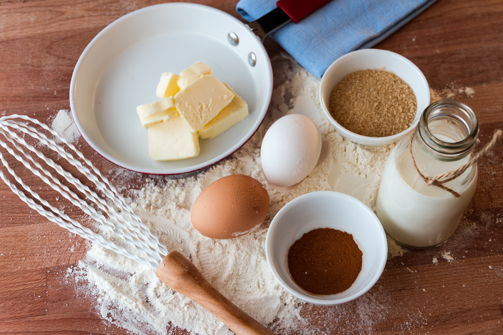

Odin Recipes: MBR Recipes

MBR Recipes is a website dedicated to providing easy-to-follow recipes and ideas for delicious meals inspired by allrecipes.com. Our focus is on breakfast classics, and we have carefully selected the first three recipes to share with our visitors. Whether you are a seasoned chef or a beginner in the kitchen, our recipes are designed to be simple, yet satisfying. We believe that everyone deserves a tasty and nutritious breakfast, and our mission is to help you achieve that with our selection of recipes. So, grab your apron and let's get cooking!